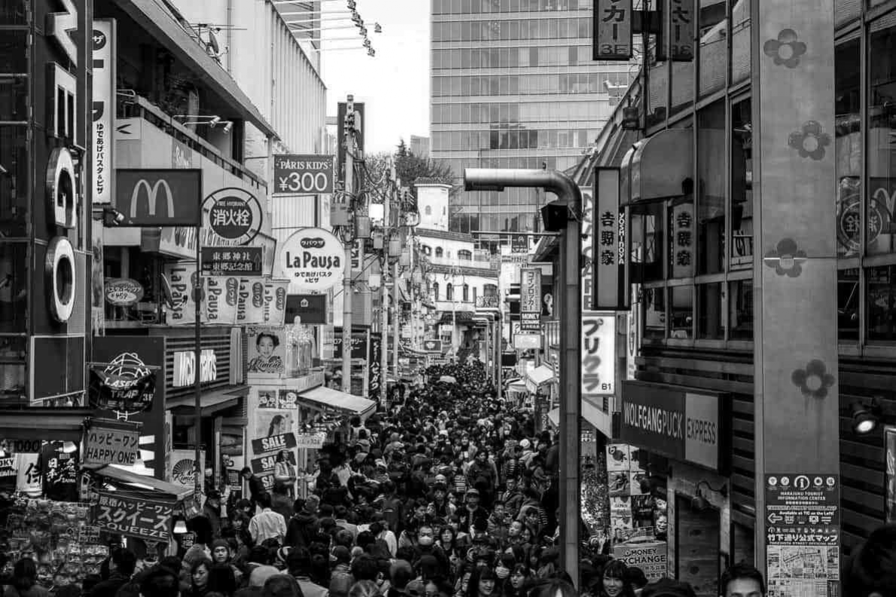

Information
Where to? Tokyo, Japan
Date of Departure: April 16-30
How Long is the trip? Two Weeks
Transportation
How will I get there? by Plane
Throughout the trip I will take transportation such as..
Activities
What will we do?
1. TOKYO's Disneyland
Tokyo's version of Disneyland
2. TOKYO's Universal Studios

Tokyo's version of Universal Studios
3. TOKYO Amusement Park
Amusement Park in Tokyo
4. Takeshita Dori

Town Center, busiest on Sundays
5. Water Bus Tour
Tour of Tokyo via water bus
Dining/Hotels
What will we eat?
1. Crepes
There are many crepe stands in Tokyo
2. Ninja Restaurant
Restaurant where the waiters are dressed as ninjas, the inside is made to look 'ninja' like
3. Popcorn Vending Machine
Vending machine that gives you hopefully fresh popcorn on the spot
4. Milk Vending Machine
Vending Machine that dispenses milk with different flavor options; my favorite is banana milk
5. Banana Vending Machine
Speaking of bananas, this vending machine dispenses that
6. Starbucks
Taking a break from vending macines; this is the worlds second largest starbucks.
Leading
second place with 32,000 square feet. The record was broken this year by Chicago, Illinois who is
leading with 35,000
Where will we stay?
Airbnb One
Airbnb Two
Airbnb Three
Expenses
Food Budget: Roughly 600 dollars; it adds up
Hotel Budget: 3,000 dollars
Activity Budget: 3,500 dollars
Transportation Budget: 3,000 dollars
Hotel Budget: 3,000 dollars
Activity Budget: 3,500 dollars
Transportation Budget: 3,000 dollars